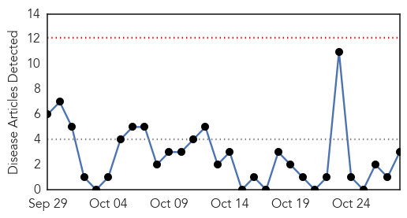
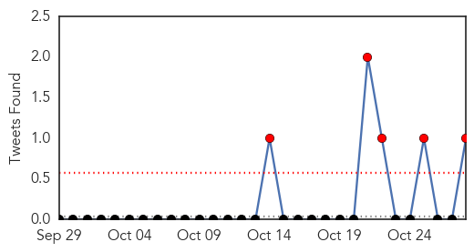
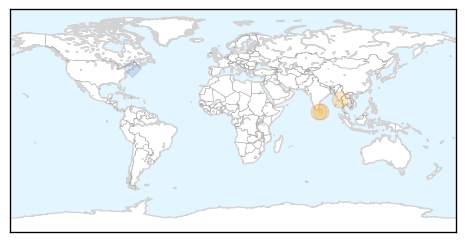
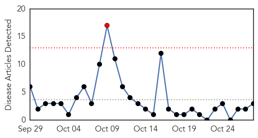

Meningitis
30-Day Web Trend
0 alerts, 0 warnings

30-Day Twitter Trend
5 alerts, 0 warnings

Article Locations
Article Confidences

Top Articles:
- 0.658
- Dr. Aurangzeb Hafi’s DESPO-Asia Appraisal Ascribed by the UN for DRR Strategic Frameworks – UN-IDDR 2015
- 0.656
- Dr. Aurangzeb Hafi's DESPO-Asia Appraisal Ascribed by the UN for DRR Strategic Frameworks
- 0.653
- UN-Ascribed DESPO-Asia Appraisal by Pak Researcher Dr. Aurangzeb Hafi, Globally Assented by UNISDR for DRR Frameworks
Top Tweets:
- 0.612
- Nurse with meningitis in Ebola relapse isn't only case of late-onset brain involvement. Encephalitis reported here: https://t.co/En28N1TrAv
Measles
30-Day Web Trend
1 alerts, 0 warnings

30-Day Twitter Trend
0 alerts, 0 warnings

Article Locations
Article Confidences
Top Articles:
Top Tweets:
-
No tweets found for Oct 28, 2015